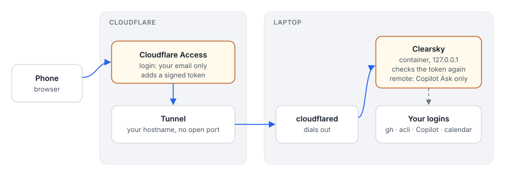

Status: on hold (design only, nothing built). Written 2026-10-29.
Run Clearsky on the laptop as a non-privileged container instead of a bare node process. Later, and only if wanted, open it to the phone through a Cloudflare Tunnel on a dyndns'd domain.
The service stays on the laptop because that is where the logins live: gh, acli, the Copilot CLI, GNOME Online Accounts and the keyring. A server would need all of them set up again, with work tokens kept on another machine.
--user), with a read-only root filesystem and no capabilities. It runs as Morten's own uid, so files it writes stay his.~/.copilot, because Copilot works in the repos.| Need | Mount or setting | Mode | Why |
|---|---|---|---|
| Clearsky config and state | ~/.config/clearsky | rw | .env, state.json, csrf token, private sources, flyt session file |
| GitHub | ~/.config/gh | ro | gh auth, used for PR data and the PR previews; or pass GH_TOKEN |
| Jira | acli's config dir | rw | acli refreshes its own login |
| Copilot | ~/.copilot | rw | sessions (session-state/, inuse.*.hold), skills, CLI login |
| Code for Copilot | ~/dev (CLEARSKY_CODE_DIRS) | rw | new chats about a PR run in its clone; Copilot edits there |
| git over ssh | $SSH_AUTH_SOCK, ~/.ssh/known_hosts | socket, ro | so Copilot's git fetch/push works without copying keys |
| Calendar cache | ~/.cache/evolution/calendar | ro | events come from Evolution's SQLite caches |
| Calendar sources | ~/.config/evolution/sources | ro | the .source files |
| Calendar list from GOA | ~/.cache/clearsky/eds-sources.json | ro | see below; replaces the D-Bus call |
| Port | -p 127.0.0.1:7777:7777 | the server listens on 0.0.0.0 inside, but the host only binds loopback |
The image contains Node 22, gh, acli and the Copilot CLI, pinned versions. Things it does not need: the D-Bus session bus, the X or Wayland socket, the keyring, /run/user, privileged mode, and --network host.
Sketch (Podman):
podman run -d --name clearsky --userns=keep-id --read-only --cap-drop=all --security-opt no-new-privileges \
--tmpfs /tmp \
-p 127.0.0.1:7777:7777 -e CLEARSKY_HOST=0.0.0.0 \
-v ~/.config/clearsky:/home/me/.config/clearsky:Z \
-v ~/.config/gh:/home/me/.config/gh:ro,Z \
-v ~/.copilot:/home/me/.copilot:Z \
-v ~/dev:/home/me/dev:Z \
-v ~/.cache/evolution/calendar:/home/me/.cache/evolution/calendar:ro \
-v ~/.config/evolution/sources:/home/me/.config/evolution/sources:ro \
-v ~/.cache/clearsky:/home/me/.cache/clearsky:ro \
-v $SSH_AUTH_SOCK:/ssh-agent -e SSH_AUTH_SOCK=/ssh-agent \
clearskyThe container sees paths under /home/me while the host has /home/morten. Copilot keys sessions by cwd, so sessions started in the container wouldn't match the same repo opened in a host terminal. Mount everything at the same absolute paths as on the host (-v ~/dev:$HOME/dev, with HOME=$HOME) so session history stays shared.
busctl --user on the session bus. Mounting the bus socket would also give the container the keyring and every other desktop service. Instead, a systemd user timer on the host writes the same busctl JSON to ~/.cache/clearsky/eds-sources.json every 10 minutes, and registrySources() reads that file when busctl isn't available.node bin/clearsky.mjs login flyt (to add). It writes the session to ~/.config/clearsky/flyt-session.json, which the container already sees. Inside the container there is no keyring, so flyt.mjs falls back to that file. Renewing the login is plain HTTP and works from the container.notify-send needs the session bus. In the container hasNotifySend() reports browser, so the open page shows notifications instead. If banners are wanted while no tab is open, a host-side notify-send relay can read a small queue file, but browser notifications are fine to start with.podman exec -it clearsky gh auth login with a device code. Settings should say so when it detects the container.With a Cloudflare Tunnel, the laptop makes an outbound connection to Cloudflare and no inbound port is opened. The tunnel's hostname lives on Morten's own domain in Cloudflare DNS, so the tunnel itself doesn't need dyndns. dyndns is only needed if something else must reach the laptop directly.

Auth, in layers:
Cf-Access-Jwt-Assertion.https://<team>.cloudflareaccess.com/cdn-cgi/access/certs), the application's aud tag and the allowed email.CLEARSKY_ALLOWED_HOSTS adds the tunnel hostname to the current 127.0.0.1/localhost check, so DNS rebinding stays blocked.What this exposes, even with Access in place: Cloudflare terminates TLS, so it sees the pages (PRs, Jira tickets, calendar, school messages). That is the main reason to check with the employer first.
When the laptop sleeps, the phone gets a Cloudflare error page. That's expected, since the service lives on the laptop.
CLEARSKY_HOST (default 127.0.0.1), so the server can listen on 0.0.0.0 inside a container.registrySources() to ~/.cache/clearsky/eds-sources.json, plus the host-side timer unit in contrib/.clearsky login flyt command that runs the BankID login from the terminal.Containerfile, plus a contrib/clearsky.container Quadlet file for Podman with the mounts above (same paths as on the host).Phone access, only after the employer says yes:
CLEARSKY_ALLOWED_HOSTS.CLEARSKY_CF_ACCESS_TEAM, CLEARSKY_CF_ACCESS_AUD, CLEARSKY_CF_ACCESS_EMAIL), with a fail-closed test.cloudflared config example in contrib/.